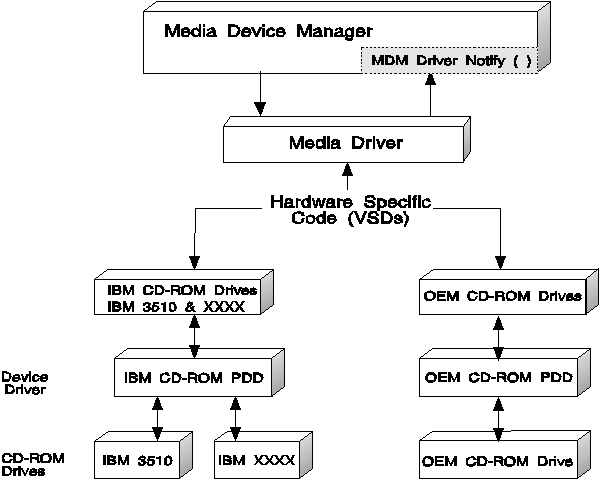

The CD audio MCD controls a nonstreaming device: the CD-ROM drive. Because it is a nonstreaming device, the CD-ROM drive does not require buffered I/O for streaming by the sync/stream manager. Instead, it plays audio out through its internal Digital-to-Analog Converter (DAC), which is the nonstreaming device equivalent of an audio adapter. Thus, the CD audio MCD must use the IOCtl interface to process its own commands to manipulate the data stream within the device.
The modules of the CD audio MCD are shown in the following figure.